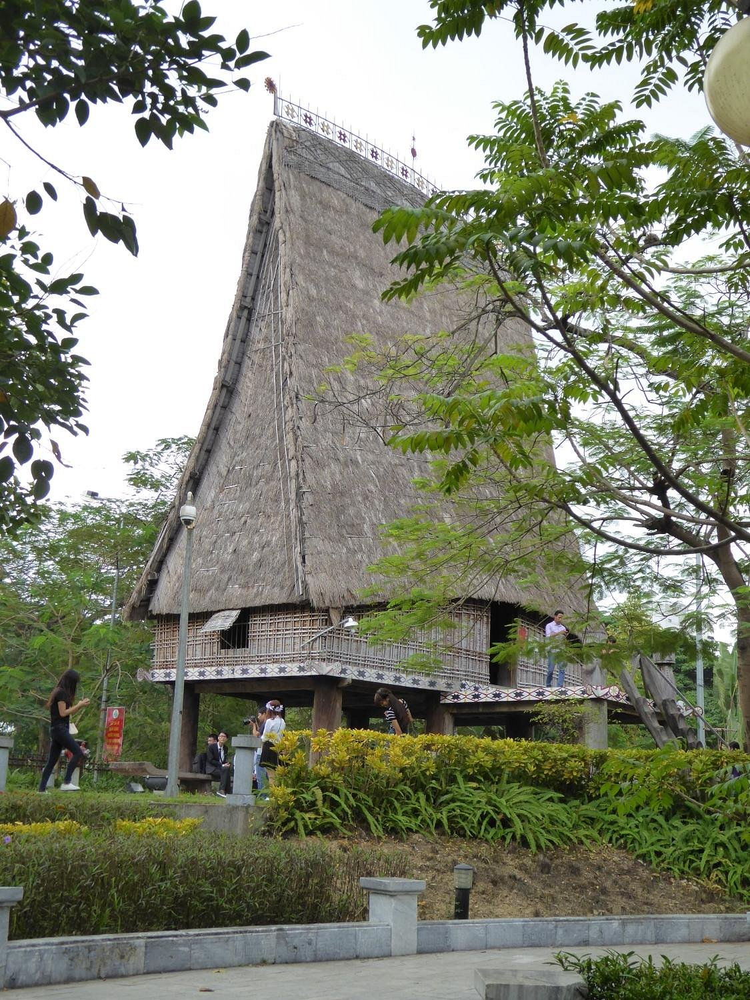

Jan 25
Minority Ethnic Museum
There are homes for different ethnic groups in Thai Nguyen. If you are in the area you must visit this wonderful museum. It has life size ethic tribal houses you can enter and see first had. It displays ethic dress from many communities. Also on display are musical instruments, historical photos, artwork and handicrafts. It is set on a huge area and in the outer grounds as well as the ethic houses are temples and pagodas as well as statues and carvings. We highly recommend a visit here.
This is the museum's website.